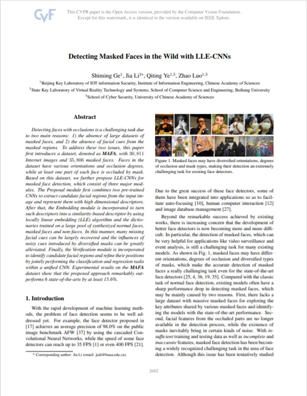
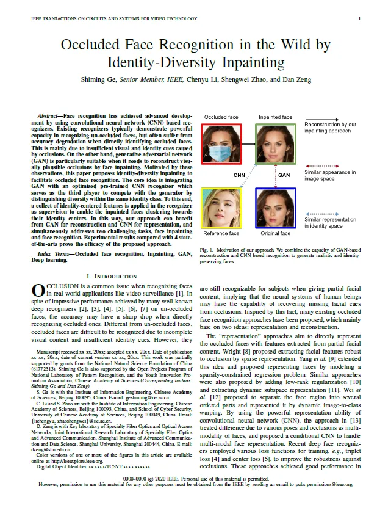
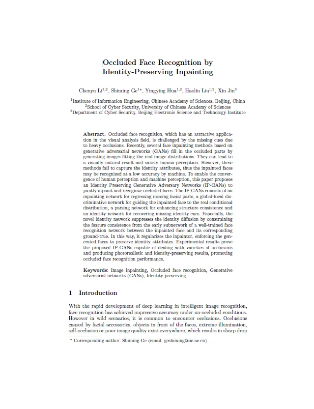

Detecting Masked Faces in the Wild with LLE-CNNs
Intelligent Multimedia Security Group, IIE CAS
|
Abstract
Detecting faces with occlusions is a challenging task due
to two main reasons: 1) the absence of large datasets of
masked faces, and 2) the absence of facial cues from the
masked regions. To address these two issues, this paper
first introduces a dataset, denoted as MAFA, with 30, 811
Internet images and 35, 806 masked faces. Faces in the
dataset have various orientations and occlusion degrees,
while at least one part of each face is occluded by mask.
Based on this dataset, we further propose LLE-CNNs for
masked face detection, which consist of three major modules. The Proposal module first combines two pre-trained
CNNs to extract candidate facial regions from the input image and represent them with high dimensional descriptors.
After that, the Embedding module is incorporated to turn
such descriptors into a similarity-based descriptor by using
locally linear embedding (LLE) algorithm and the dictionaries trained on a large pool of synthesized normal faces,
masked faces and non-faces. In this manner, many missing
facial cues can be largely recovered and the influences of
noisy cues introduced by diversified masks can be greatly
alleviated. Finally, the Verification module is incorporated
to identify candidate facial regions and refine their positions
by jointly performing the classification and regression tasks
within a unified CNN. Experimental results on the MAFA
dataset show that the proposed approach remarkably outperforms 6 state-of-the-arts by at least 15.6%.
Publications
|

|
Detecting Masked Faces in the Wild with LLE-CNNs.
Shiming Ge,
Jia Li,
Qiting Ye,
Zhao Luo
[Poster] CVPR, 2017
@inproceedings{ge2017detecting,
title={Detecting Masked Faces in the Wild with LLE-CNNs},
author={Ge, Shiming and Li, Jia and Ye, Qiting and Luo, Zhao},
booktitle={Proceedings of the IEEE Conference on Computer Vision and Pattern Recognition},
pages={2682--2690},
year={2017},
}
|
Acknowledgements
This work was partially supported by grants from National Key Research and Development Plan (2016YFC0801005), and
National Natural Science Foundation of China (61672072 & 61402463).
Occluded Face Recognition in the Wild by Identity-Diversity Inpainting
Intelligent Multimedia Security Group, IIE CAS
|
Abstract
Face recognition has achieved advanced development
by using convolutional neural network (CNN) based recognizers.
Existing recognizers typically demonstrate powerful
capacity in recognizing un-occluded faces, but often suffer from
accuracy degradation when directly identifying occluded faces.
This is mainly due to insufficient visual and identity cues caused
by occlusions. On the other hand, generative adversarial network
(GAN) is particularly suitable when it needs to reconstruct visually
plausible occlusions by face inpainting. Motivated by these
observations, this paper proposes identity-diversity inpainting to
facilitate occluded face recognition. The core idea is integrating
GAN with an optimized pre-trained CNN recognizer which
serves as the third player to compete with the generator by
distinguishing diversity within the same identity class. To this end,
a collect of identity-centered features is applied in the recognizer
as supervision to enable the inpainted faces clustering towards
their identity centers. In this way, our approach can benefit
from GAN for reconstruction and CNN for representation, and
simultaneously addresses two challenging tasks, face inpainting
and face recognition. Experimental results compared with 4 stateof-
the-arts prove the efficacy of the proposed approach.
Publications
|

|
Occluded Face Recognition in the Wild by Identity-Diversity Inpainting.
Shiming Ge,
Chenyu Li,
Shengwei Zhao,
Dan Zeng
[Early Access on IEEE] TCSVT, 2020
@article{ge2020IDGAN,
author = {Ge, Shiming and Li, Chenyu and Zhao, Shengwei and Zeng, Dan},
year = {2020},
title = {Occluded Face Recognition in the Wild by Identity-Diversity Inpainting},
journal = {IEEE Transactions on Circuits and Systems for Video Technology (TCSVT)},
}
|
Previous Work
|

|
Occluded Face Recognition by Identity-Preserving Inpainting.
Chenyu Li,
Shiming Ge*,
Yingying Hua,
Haolin Liu,
Xin Jin
ISAIR, 2018
@inproceedings{li2018occluded,
title={Occluded Face Recognition by Identity-Preserving Inpainting},
author={Li, Chenyu and Ge, Shiming and Hua, Yingying and Liu, Haolin and Jin, Xin},
booktitle={International Symposium on Artificial Intelligence and Robotics},
pages={427--437},
year={2018},
organization={Springer}
}
|
Acknowledgements
This work was partially supported by grants from the National Natural Science Foundation of China (61772513). Shiming
Ge is also supported by the Open Projects Program of National Laboratory of Pattern Recognition, and the Youth
Innovation Promotion Association, Chinese Academy of Sciences.
Look Through Masks: Towards Masked Face Recognition with De-Occlusion Distillation
Intelligent Multimedia Security Group, IIE CAS
|
Abstract
Many real-world applications today like video surveillance and
urban governance need to address the recognition of masked faces,
where content replacement by diverse masks often brings in incomplete
appearance, ambiguous representation, and leads to a sharp
drop in accuracy. Inspired by recent progress on amodal perception,
we propose to migrate the mechanism of amodal completion for
the masked face recognition task. We propose an end-to-end deocclusion
distillation framework, which consists of two modules.
The de-occlusion module applies a generative adversarial network
to perform face completion, which recovers the content under the
mask and eliminating appearance ambiguity. The distillation module
takes a pre-trained general face recognition model as the teacher
and transfers its knowledge to train a student for completed faces
using massive online synthesized face pairs. Especially, the teacher
knowledge is represented with structural relations among instances
in various orders, which serves as a posterior regularization to enable
the adaptation. In this way, the knowledge can be fully distilled
and transferred to identify masked faces. Experiments on synthetic
and realistic datasets show the efficacy of the proposed approach.
Publications

|
Look Through Masks: Towards Masked Face Recognition with De-Occlusion Distillation.
Chenyu Li,
Shiming Ge,
Daichi Zhang,
Jia Li
[Poster] ACMMM, 2020
@InProceedings{Li20,
author = "Li, Chenyu and Ge, Shiming and Zhang, Daichi and Li, Jia",
title = "Look Through Masks: Towards Masked Face Recognition with De-Occlusion Distillation",
booktitle = "ACM International Conference on Multimedia(MM' 20)",
year = "2020",
}
|
Acknowledgements
This research is supported in part by grants from the National Key Research and Development Program of China
(2020AAA0140001), the National Natural Science Foundation of China (61772513 & 61922006), Beijing Natural Science
Foundation (L192040) and Beijing Municipal Science and Technology Commission (Z191100007119002). Shiming Ge is also
supported by the Youth Innovation Promotion Association, Chinese Academy of Sciences.